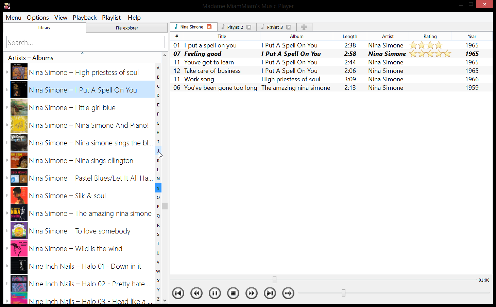
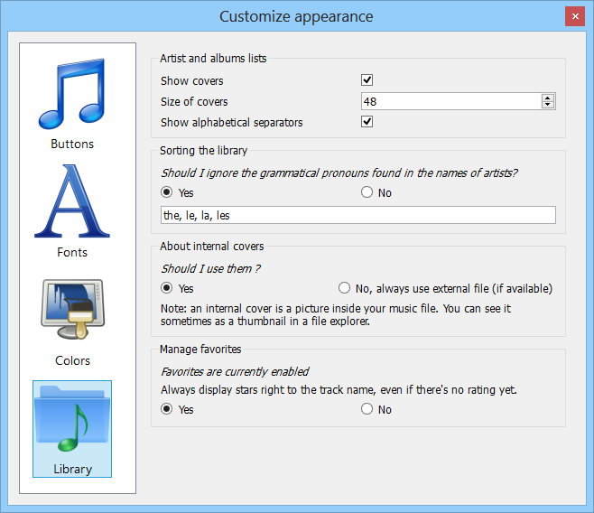
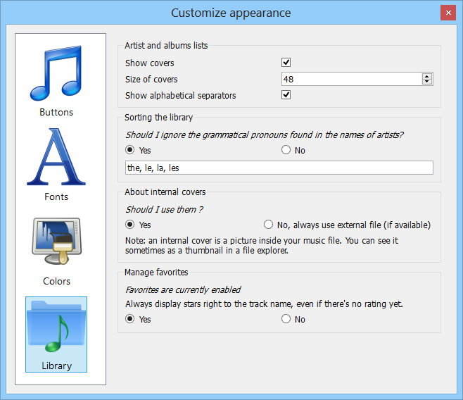
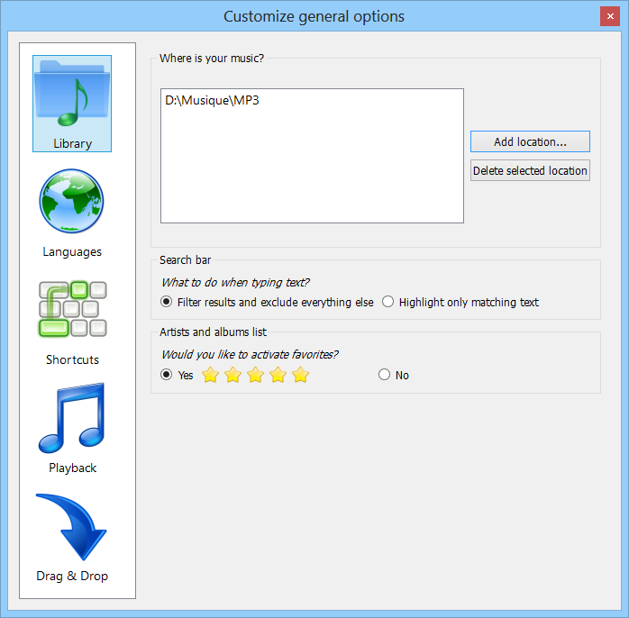
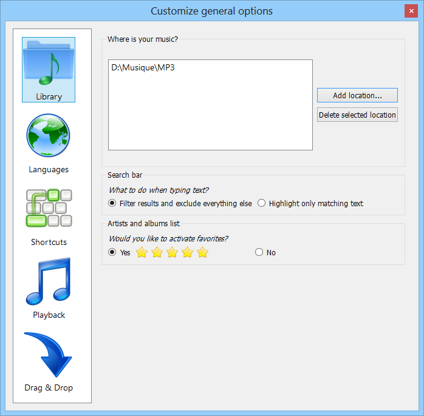
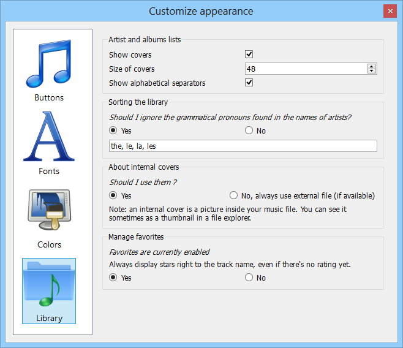
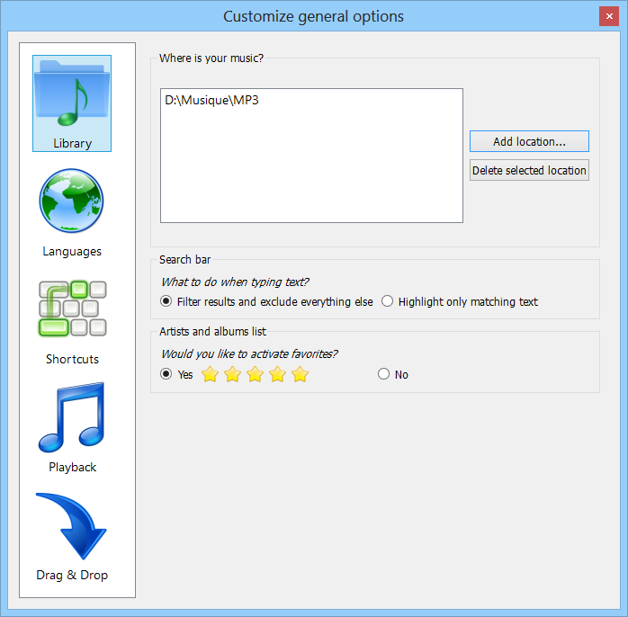

Madame Miam-Miam's Music Player is an all new MP3 player. Yet another player?
What's inside?
- Read .mp3, .m4a (MP4), .flac, .ogg, .oga (OGG Vorbis), .asf, .ape (Monkey Audio)
- Read and Edit lots of Tags using Taglib
- Customize everything: User Interface, Covers, Shortcuts, Buttons, Themes
- Fast and reliable
What is NOT inside?
- Automatically search from the Internet for lyrics
- Automatically search from the Internet for Tags
- Automatically display informations about Artist / Albums / etc from Wikipedia
- Well, it's just reading audio files, but it's doing it well!
This software was developped using Qt5 and Taglib
 Windows 8
Windows 8
 Ubuntu 13.10 (64 bits)
Ubuntu 13.10 (64 bits)
 Mac OSX 10.8
Mac OSX 10.8

 

 





Lots of things needs to be done! Work isn't over yet
- Be a beta-tester!
- Translate this player in your language
- Improve the design of the library
- Make a build for Mac OS X
- And what ever you would like to have! (I'd like a SimPlayList like foobar)